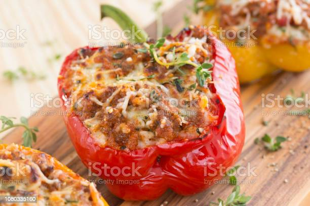

Stuffed peppers
Stuffeed peppers

Description
- Kitchen tested Stuffed peppers
- Serves 4
- 15 minutes to prepare
- 55 minutes to cook
- total time 1:10
Ingredients
- 4 large bell peppers
- 1 lb lean ground beef
- 2 tablespoons chopped onion
- 1 cup cooked rice
- 1 teaspoon salt
- 1 clove garlic, finely chopped
- 1 can (15 oz)tomato sauce
- 3/4 cup shredded mozzarella cheese (3 oz)
- Heat oven to 350°F.
- Cut thin slice from stem end of each bell pepper
to remove top of pepper. Remove seeds and membranes;
rinse peppers. If necessary, cut thin slice from bottom
of each pepper so they stand up straight. In 4-quart
Dutch oven, add enough water to cover peppers. Heat to
boiling; add peppers. Cook about 2 minutes; drain.
-
In 10-inch skillet, cook beef and onion over medium
heat 8 to 10 minutes, stirring occasionally, until
beef is brown; drain. Stir in rice, salt, garlic
and 1 cup of the tomato sauce; cook until hot.
- Stuff peppers with beef mixture. Stand peppers
upright in ungreased 8-inch square glass baking dish.
Pour remaining tomato sauce over peppers.
-
Cover tightly with foil. Bake 10 minutes. Uncover
and bake about 15 minutes longer or until peppers
are tender. Sprinkle with cheese.